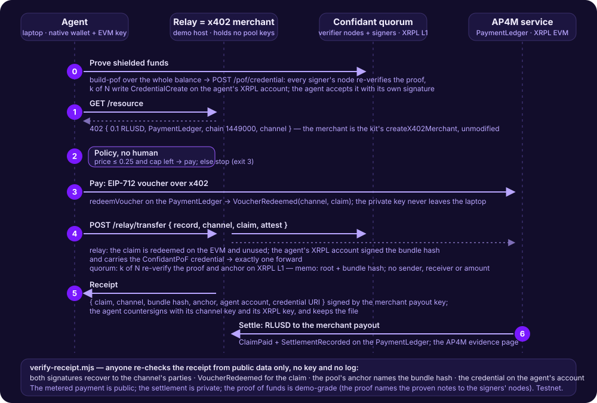

Private by construction
Privacy comes from the zero-knowledge notes themselves (Zcash Orchard / Halo 2), not from a promise to look away. The internal links are broken by the math; the entry and the exit are public (see the limits below).
Shielded pool · credential gate · proof of funds · XRP Ledger
Confidant is a shielded pool for the XRP Ledger. Value goes in, moves privately, and comes out — without exposing amounts or who paid whom. An auditor can still open it; no single operator can betray it.
The problem
Every XRPL payment reveals sender, receiver, and amount — and links them over time. Balances, counterparties, strategy and timing are all in the open, for anyone, forever.
The whole graph is publicA deposit in, a withdrawal out, and periodic commitments — nothing that links one to the other. The ledger's own confidential-transfer work (XLS-96) hides amounts but, by its specification, gives no sender or receiver anonymity. Confidant hides the amount and the graph of every transfer inside the pool; the entry and the exit stay public (see the limits below).
Amounts and links stay privateConfidant does this with the same zero-knowledge technology behind Zcash — without changing anything in the XRP Ledger.
How it works
Value enters the pool as a private note (a Zcash Orchard commitment, proven with zero-knowledge — no trusted setup). Inside the pool, notes move by proof alone; on the ledger you see only an anchor, never a link.
You pay the pool on XRPL; the pool issues you a private note of equal value, less the protocol fee. The deposit is public; the note is yours alone.
Notes are spent and re-created by zero-knowledge proof. Nothing on-ledger reveals the amount, the sender, or the recipient — only a commitment that the math checked out.
Burn a note to withdraw to any XRPL address. The payout is bound to the burned note, so nothing can be paid out that was not first shielded in.
What makes it safe to use
Privacy comes from the zero-knowledge notes themselves (Zcash Orchard / Halo 2), not from a promise to look away. The internal links are broken by the math; the entry and the exit are public (see the limits below).
Every note is bound to a real on-ledger deposit — nothing unbacked can be minted. The pool account is held by a threshold quorum of independent nodes (XRPL SignerList, master key disabled); no one node can move funds, and each re-checks every step on its own state before it signs.
A screening gate refuses listed senders and destinations at the door — a check against public lists at the public boundary, not a proof of innocence per note — and per-holder viewing keys give an auditor selective disclosure: privacy with an off-switch regulators can live with.
This weekend · XRPL hackathon, Lending & Borrowing track
Two features, built on-site on Oct 24–25 on top of the running pool (designs written in advance, code written at the event), using the ledger's own primitive — XLS-70 Credentials. The loan side on the XRPL Lending Protocol is the design they are built for (the protocol is devnet-only; nothing of it is built here).
A deposit is accepted only from an XRPL account holding an accepted XLS-70 Credential from the issuer the pool trusts (an issuer account, or a permissioned domain's issuer set), confirmed by the holder's own signature. Every verifier node reads it from the ledger before it signs — a native XRPL object, not a promise, and nothing about anyone's notes. One fact is checked — that the depositing account holds the credential — for every depositor alike; it is a per-pool switch, and an operator who does not need it runs the pool open. On this testnet it is KYC in demo mode: the gate the nodes enforce is the real, working system; the issuer's admission policy is open registration — a demo issuer service writes the credential to any account that asks, rate-limited, as an exchange opens an account first and KYC lifts its limits — and a real deployment applies its own issuer policy to the same gate.
The holder presses one button: the wallet proves it controls at least its balance inside the pool, bound to the holder's XRPL account, a request id and a ledger window; every signer's node re-verifies it, the quorum writes an expiring XLS-70 Credential on that account, and the holder confirms it. Demo-grade, said plainly: on the unchanged circuit the proof reveals the proven notes' nullifiers to the signers' nodes, so the wallet refreshes its notes right after; the accepted next step is a circuit that proves funds without revealing them.
A lender types the borrower's address on the lender page and reads the credential from the ledger — never the proof, the notes or the balance; only a verdict, with an expiry. A loan broker on the XRPL Lending Protocol would require that Credential by policy before it counter-signs the loan: the design, not built this weekend.
Honest line: the Credential says someone controlling ≥ X answered a challenge bound to this account as of that ledger — an underwriting signal, a snapshot, not a lock. The steps after the weekend: the nullifier-free proof-of-funds circuit (the design the audit accepted on 2026-10-25), revoking the credential when the proven notes move, and shielded collateral escrow under joint control.
This weekend · Mastercard AP4M track
A scripted agent holds shielded funds and needs to pay a supplier without publishing it. Privacy is a metered service: the agent pays RLUSD on XRPL EVM through Mastercard's AP4M for the relay of one zero-knowledge transfer, which the pool's quorum then anchors on XRPL L1. Before it may pay, it proves its shielded funds to the quorum; after the anchor it holds a receipt anyone can re-check.

The agent proves "I control at least X XRP in the pool" to the quorum; k of N signers write an expiring
ConfidantPoF credential on the agent's XRPL account and the agent accepts it. The relay serves only an
account that carries one, read from the ledger. Then the ordinary x402 dance: GET /resource,
402, the agent's policy (price ≤ its maximum, budget left on its channel) decides to pay — no human.
An EIP-712 voucher is redeemed on the PaymentLedger (VoucherRedeemed). The agent posts the bundle with its claim and an attestation — its XRPL account signing the bundle hash. The relay checks the claim on the EVM and the credential on XRPL, forwards once; the quorum re-verifies the proof and anchors it: the memo carries the root and the bundle hash, never a sender, a receiver or an amount.
The relay signs {claim, channel, bundle hash, anchor, agent account, credential} with the merchant payout key
named in the 402; the agent countersigns with its channel key and its XRPL key. verify-receipt.mjs
re-checks both signatures, the redeemed voucher, the pool's anchor and the credential from public data only.
RLUSD then settles to the merchant payout.
Honest line: the metered payment is fully public on AP4M's rail; the settlement of the transfer is
private; the proof of funds is demo-grade (the proof names the proven notes to the signers' nodes) and says
"controlled ≥ X as of ledger L", not "controls it now". If you opened /resource in a browser and landed
here: that URL is the machine-to-machine ticket endpoint of the relay; agents call it with their channel header.
Testnet only; the sponsor's kit is for the hackathon.
Where it goes next
Confidant runs today on client-side proofs and a quorum of independent nodes. Because the TRUST stack is an attested TEE co-processor, the same pool is planned to run inside the attested enclave cluster that already powers the TRUST bridge. This is what “shielded XRPL on TEE” would mean — none of it is live.
Confidant is the application; the attested cluster is the technology. The privacy design does not change — what changes is whom you trust: less the people running it, and instead the enclave manufacturer and its attestation — a hardware trust base, stated plainly. The same move would turn any app on the stack into its TEE-hardened version.
Honest status
Built, tested, running
Designed, grounded, not yet live
Where the data lives. The pool's state is on the XRP Ledger (one anchor memo per operation); the bundle bytes — proofs and note ciphertexts — are served by every verifier node and are also pinned on IPFS as one public snapshot: CID bafybeifgshmfpvfw75wbi5755urzjxejvjwv5lwds6lys6nelajd6etzda, published on the ledger in a confidant/snapshot memo. Anyone can rebuild the pool from the XRP Ledger plus that one object and re-verify every proof (checked 2026-10-23: a fresh node given only the gateway copy reached the live root). Pinned, not permanent; the ledger carries the state, not the bytes.
Privacy comes from the zero-knowledge notes; the quorum — and, later, the enclave — protects integrity, i.e. who can move funds. Honest limits: a pool offers little privacy until it is used by many; today's safety rests on the independence of the quorum (a dishonest threshold could drain the pool's funds — stated plainly, on today's XRPL); and endpoint timing and amounts can still correlate a deposit with a withdrawal. Confidant is a shielded pool, not a claim of perfect anonymity.
Privacy an auditor can open — and no single operator can betray.
Confidant — shielded XRPL · zero-knowledge today · credential gate and proof of funds this weekend · enclave-ready later